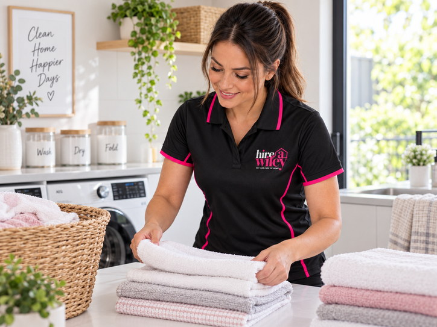
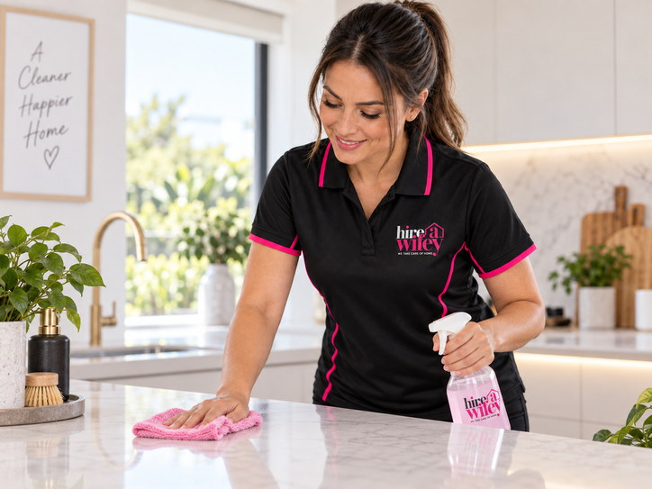
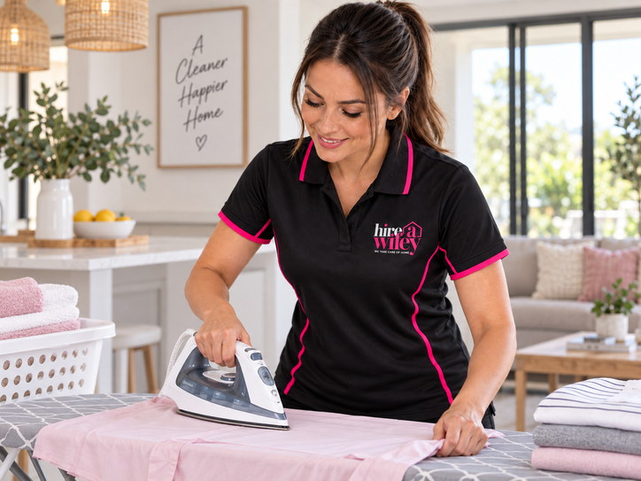
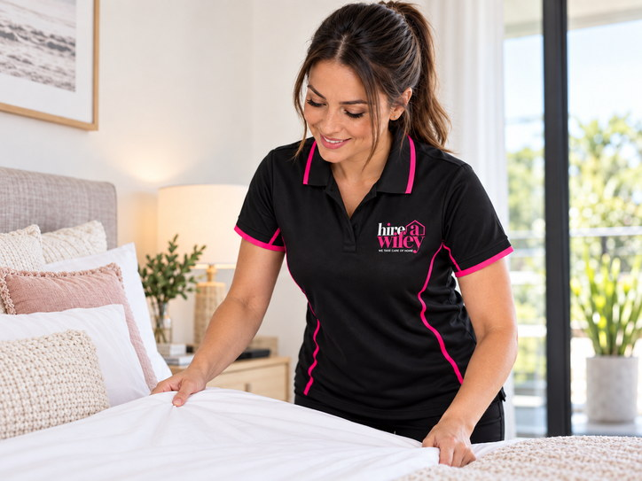
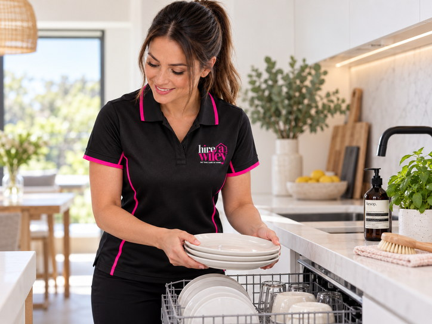
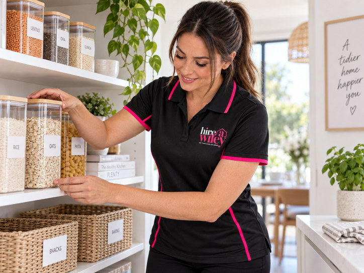
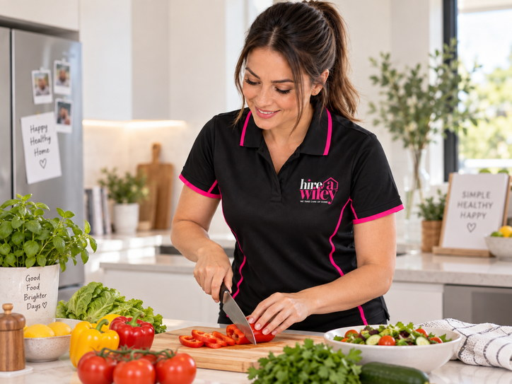
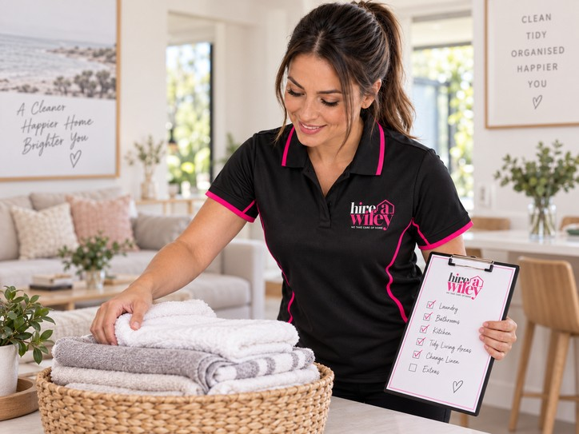
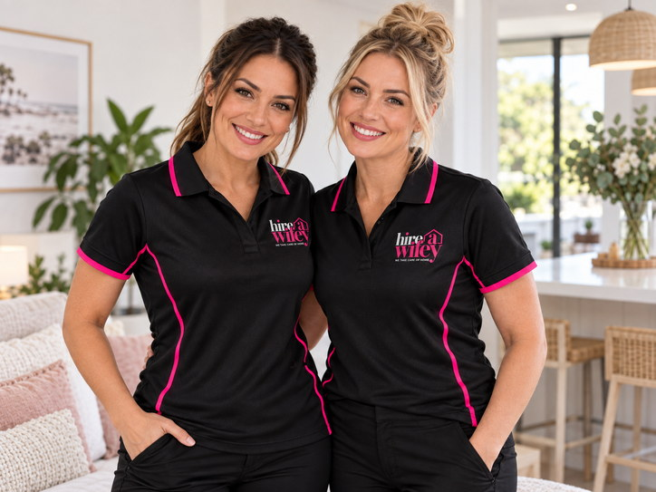

Busy Families
Take cleaning, washing and household catch-up off an already full week.
Hire a Wifey.
We Take Care of Home.
Cleaning is only the beginning.
Friendly, reliable household help with cleaning, laundry, ironing, dishes, bed making, organisation, meal preparation and more — so you can come home with less to do.
One-off · Weekly · Fortnightly · NDIS & DVA clients welcome

There is always something waiting at home: a bathroom to clean, washing to fold, dishes to put away, sheets to change or dinner to prepare.
You could spend your day off catching up on it all. Or you could Hire a Wifey.
Tell us what would make your life easier. We tailor your Wifey visit around your home and your priorities instead of forcing every customer into the same checklist.
Keeping a home running takes more than vacuuming and bathrooms. Sometimes the biggest help is folding three baskets of washing, changing the beds, emptying the dishwasher, organising the pantry or preparing ingredients for dinner.
One Wifey. One visit. A whole lot less for you to worry about.
Book Your WifeyEvery home has a different reason for needing an extra pair of hands.
Take cleaning, washing and household catch-up off an already full week.
Come home to fewer jobs waiting and keep your weekends for yourself.
Friendly regular help keeping the home clean, tidy and organised.
One-off or short-term support when life changes or the to-do list gets too much.
Eligible self-managed and plan-managed participants can enquire about appropriate household assistance.
Eligible DVA clients can talk to us about approved household services and their requirements.
You do not need an excuse. If you would rather spend your time doing something else, that is reason enough.
Choose the household tasks that matter most to you. Different jobs can be combined during the same booked visit.

Bathrooms, kitchens, floors, dusting, general tidying, deep or spring cleans and household resets.
Washing, drying, hanging, sorting, folding, putting clothes away and changing linen.

Ironing can be included during the same visit and combined with laundry, cleaning or other household help.

Strip beds, change sheets and pillowcases, replace doona covers and make fresh beds.

Hand washing, dishwasher loading or unloading, benches, sinks, cupboards and kitchen tidying.

Pantries, wardrobes, laundries, cupboards, kids’ rooms and general decluttering support.

Basic ingredient and meal preparation using your food and instructions, with the kitchen reset afterwards where agreed.
Not sure where your job fits? If it is a reasonable household task within our service scope, simply ask us about it.
You do not necessarily need to book separate services. Tell us what matters most and your Wifey can work through the agreed priorities during your booked time.
Next visit, the priorities can be completely different.
Book My Wifey VisitCleaning, washing, beds, dishes and household help are how we deliver the thing that matters most: time back.
Inviting someone into your home requires trust. Hire a Wifey is fully insured, and our Wifeys have current police checks. We also listen to the jobs that matter most to your household.
Book With ConfidenceProfessional protection and responsible service.
Trust and professionalism inside your home.
Friendly household support across the local area.
Your priorities guide the agreed work during the visit.
One-off, weekly and fortnightly options.
Housekeeping and everyday household help in one flexible service.
Equipment and cleaning supplies are provided where applicable. Customers with preferred products can discuss this when booking.
Keep household jobs from building up with a service frequency that fits your life.
Ideal for busy households wanting dependable help keeping cleaning, beds, washing and everyday jobs under control.
Check availabilityA popular option for homes wanting regular household help without a weekly service.
Check availabilityGreat for a home reset, visitors, moving, a busy period or simply trying Hire a Wifey before booking regularly.
Check availabilitySpend more time with your kids. Take the dog to the beach. Have lunch with friends. Work on your business. Go to the gym. Spend time with your partner. Or do absolutely nothing.
Come home with less to do.
Hire a Wifey provides home cleaning, housekeeping and household assistance throughout Hervey Bay and surrounding communities.
Suburb not listed? Make an enquiry — the service area may continue to expand.
Book A Wifey
Tell us what household assistance you are looking for and we will discuss whether we can assist within the relevant plan, funding or approved service requirements.
We welcome eligible self-managed and plan-managed NDIS participants. Depending on the participant’s plan, funding and approved supports, household assistance may include cleaning, laundry, ironing, beds, dishes, organisation, meal preparation and other appropriate household tasks.
NDIS EnquiryWe welcome eligible Department of Veterans’ Affairs clients requiring approved household assistance. Tell us what services have been approved and we will discuss your requirements and whether we can provide the service.
DVA EnquiryBook or enquire and tell us about your home and what you would like help with.
One-off, weekly or fortnightly. Share your preferred days and times.
Cleaning? Washing? Beds? Dishes? Tell us which agreed jobs matter most.
Your Wifey takes care of the agreed household tasks during the booked service.
Come home with less to do. That is the best part.
See what customers say about their Wifeys. Genuine feedback, star ratings and first name/suburb details can be displayed here as reviews are approved.
Open the questions that matter to you. The most common questions are shown first to keep the page easy to scan on mobile.
Hire a Wifey is more than a traditional cleaning service. Depending on your booking and requirements, your Wifey can assist with cleaning, housekeeping, laundry, ironing, changing beds, dishes, home organisation, tidying and basic meal preparation.
Yes. Hire a Wifey is fully insured and our Wifeys have current police checks. We take trust, professionalism and the responsibility of working inside customers’ homes seriously.
No. You may want help purely with laundry, ironing, bed changes, organisation or other household tasks, or combine these with cleaning during the same visit.
Yes. Tell us which agreed jobs are most important and your Wifey can work through those priorities during the booked time.
Yes. Weekly and fortnightly services are available subject to current availability.
Yes. You do not need to commit to a regular service. One-off visits are available subject to availability.
Yes. We welcome eligible self-managed and plan-managed NDIS participants. Services must be appropriate to the participant’s plan and funding arrangements.
Yes. We welcome eligible DVA clients requiring approved household assistance.
We service Hervey Bay and many surrounding suburbs including Pialba, Scarness, Torquay, Urangan, Point Vernon, Kawungan, Urraween, Eli Waters, Wondunna, Nikenbah, Dundowran, Dundowran Beach, Craignish, Sunshine Acres, Booral and River Heads.
Where applicable, our Wifeys can arrive with the equipment and cleaning products required for the booked cleaning service. Customers with preferred products should discuss this when booking.
Usually, yes. If you have preferred products or particular surface requirements, let us know when arranging the service.
Not necessarily. Access arrangements can be discussed when the booking is confirmed.
Yes. Tasks can be combined within the booked time according to the agreed priorities.
Yes. Leave fresh linen ready and bed changes can be included as one of the household tasks.
Yes. Ironing can be included as part of a Wifey service.
Yes. Hand washing dishes, loading or unloading the dishwasher and general kitchen resetting can be included.
Yes. Depending on the job, our Wifeys can assist with general household organisation such as pantries, wardrobes, laundries, cupboards and cluttered areas.
Our Wifeys may assist with basic meal and ingredient preparation in the customer’s home using the customer’s food and instructions. Tell us what you require so suitability can be confirmed.
Yes, depending on availability and the condition and scope of the property. Larger or more involved cleans should provide enough information for suitable booking time to be determined.
Yes, subject to availability and the required scope.
Yes, subject to availability and requirements. Cleaning, bed changes and general property resets can be discussed.
This depends on the size of the home and what you want your Wifey to accomplish. Provide your priorities when booking or enquiring.
Where possible, we aim to provide consistency for regular customers. Staff availability, leave and scheduling can occasionally require changes.
Contact us as early as possible and we will do our best to assist. Applicable booking or cancellation conditions should be clearly communicated when the service is confirmed.
Click any booking-related button on the page. All booking CTAs lead to the dedicated Booking Page.
Not ready to book? Use this short enquiry form for questions, unusual requests, NDIS/DVA enquiries or to discuss what you need.
Instead of starting another list of chores, you are finished for the day. Hire a Wifey is not just selling cleaning. We are giving you time back.

We are looking for friendly, reliable people who take pride in their work and care about customers. Experienced cleaners are welcome, and people with the right attitude who are willing to learn should not count themselves out.
Training and support may be available, with casual or permanent opportunities depending on current requirements.
Become A Wifey